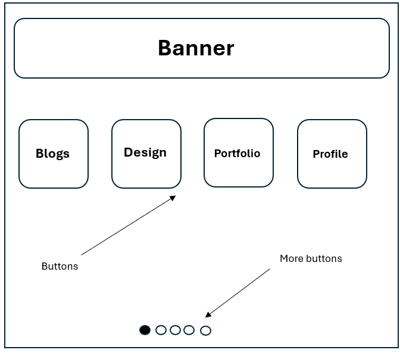

Reading:
You Say You Want a Revolution? Hypertext and the Laws of Media By Moulthrop, S.
After reading this I find it interesting how, for the most part, the internet today can contrast the original vision for hypertext. I also find interesting how hypertext was intended to empower individuals by decentralizing knowledge, however it become dominated by large corporations such as CNN and Yahoo. This is similar to the internet today with companies such as Amazon and Google controlling most traffic. It's also fascinating to me how despite parts of the web contrasting the original vision for hypertext, hypertext being envisioned as an interactive media driven by users has some truth. An example is Wikipedia and social media in general where the users themselves supply most of the content. The concept of the “docuverse” being a connected decentralized space seemed to be true more so in the earlier days of the web with forums and blogs but over time has become more overrun with large platforms such as Google, Youtube, X (Twitter) that can limit information. Moulthrop suggests that we may not have created a true revolution in the media. I can agree to some degree. In today's internet social media algorithms determine what we see, leading to echo chambers and lessening discussion. I would argue that this does not line up with the revolution that is discussed. Overall, it was an interesting read. I found it fascinating how the web has shifted from being so focused on sharing information to more controlled environments.
Folder structure:
My goal for my folder structure is to follow conventions to keep things organized and easy to access. I would say I keep my folders fairly organized, and I don't plan on changing that. It's also best to keep to conventions as it will be very useful when going into industry. It will undoubtedly be helpful when working with others in collaborative spaces. I also plan to keep my URL schemes similarly simple and organized, as well as following the best practices.
Wireframe:
My plan is for a fairly simple design that's easily readable and navigable. Rather than a flashy or extravagant design, I intend to focus on simply displaying the important information front and center. The banner will most likely be an introduction or the purpose of the site. The four buttons in the center will direct you to the corresponding section while the buttons along the bottom allow you to navigate to any section regardless of the current page you're on. Nothing else is planned as I don't want to over complicate anything at the current moment.
Inspirational sites:
My main inspirations at the current moment have come from the work of past students, that way I can more easily identify the relevant information to put on my site. In the future I plan to look at portfolios and CVs of people in the game development industry and identify anything else relevant to my site.